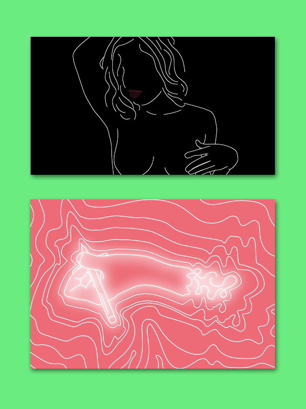
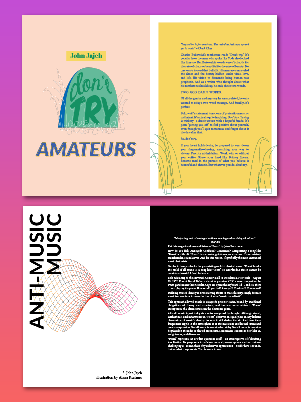
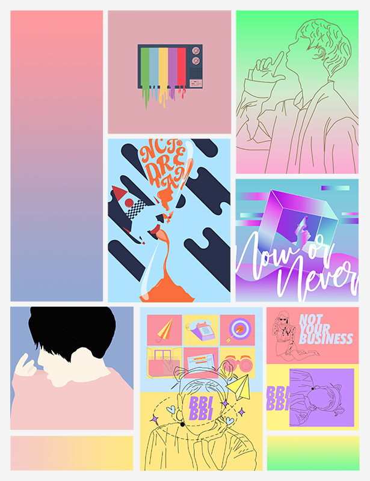
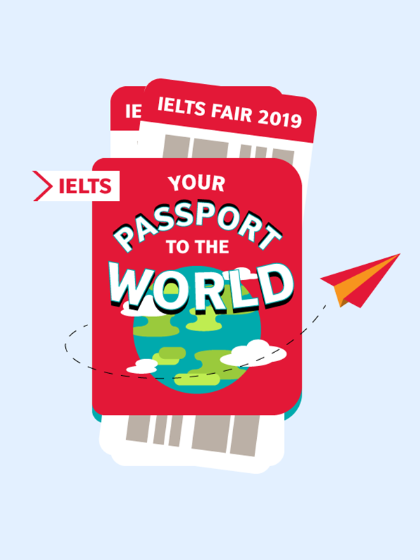
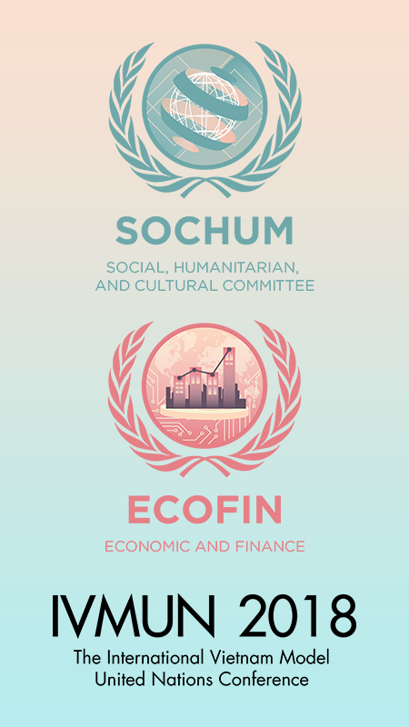
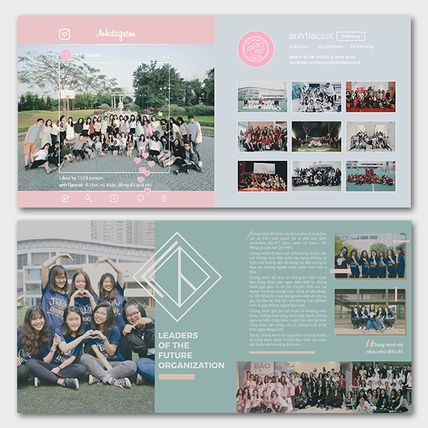
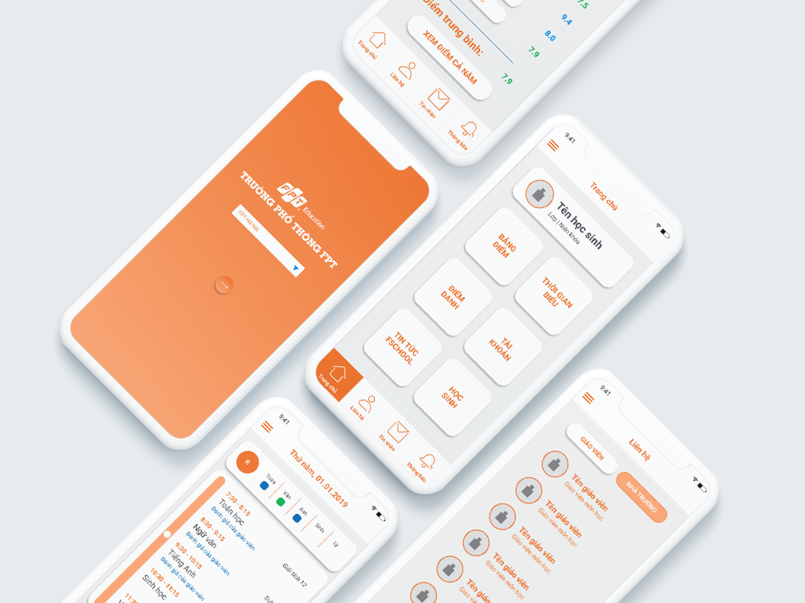

they
A friend of mine, whose bravery and pride of their own identity have always been an inspiration to me.
Adobe Illustrator
Adobe Illustrator

North ave review
My personal favourite spreads that I made for the North Avenue Review. The magazine promotes free speech, which also gives me a lot of freedom when it comes to creativity.
Adobe Illustrator, Adobe InDesign
Adobe Illustrator, Adobe InDesign

k-pop
K-pop has always been a great source of inspiration for me, especially when it comes to graphic design. This series is also my attempt at different styles of graphic designing.
Adobe Illustrator, Adobe Photoshop
Adobe Illustrator, Adobe Photoshop

ielts fair 2019
My key visual design for IELTS Fair 2019, hosted by British Council.
Adobe Illustrator
Adobe Illustrator

IVMUN 2018
Two committee logo that I made for the International Vietnam Model United Nations conference, 2018.
Adobe Illustrator
Adobe Illustrator

1518
Two spreads I made for my high school yearbook in 2018. The spreads are personalized for my class and my organization at the time.
Adobe Illustrator, Adobe Photoshop
Adobe Illustrator, Adobe Photoshop

FPT SCHOOL APP UX DESIGN
This was my first attempt at user interaction design, from creating an user flow to designing specific elements. The project was done for FPT School in Vietnam. It was an opportunity for me to experiment with this field and to confirm my wish of becoming a UX designer. Mockup template by lstore.graphics.
Adobe Illustrator, Figma, Balsamiq
Adobe Illustrator, Figma, Balsamiq